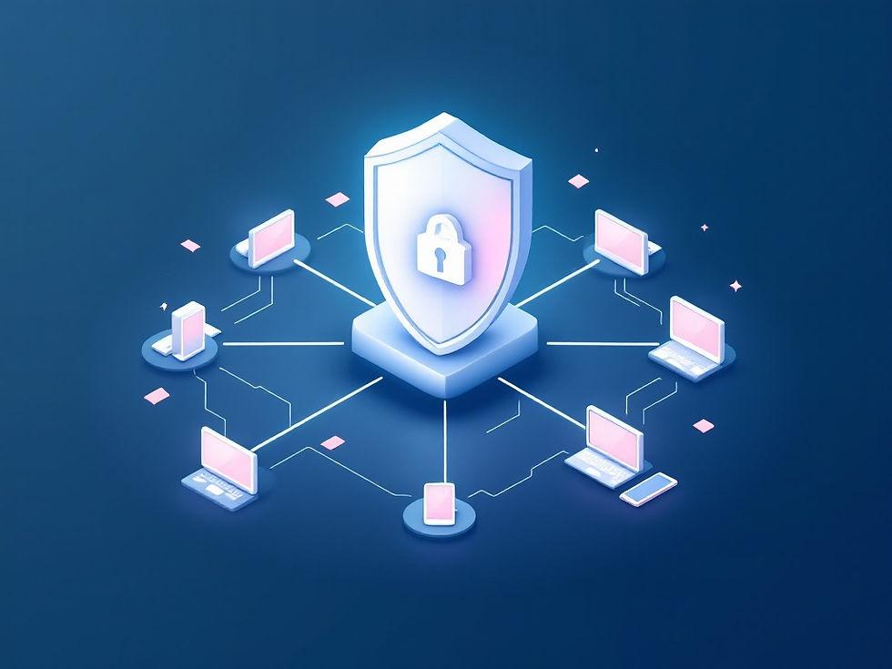

My Learning Projects
As a Cybersecurity student, I am continuously developing my knowledge and practical understanding of digital security. The projects presented below highlight some of the areas I have explored through learning and research. They reflect my interest in protecting computer systems, networks and sensitive information from cyber threats.
Project 1: Password Security Awareness
This project explores the importance of creating strong and secure passwords to protect online accounts from unauthorised access. It examines common password-related risks, including weak passwords, password reuse and phishing attacks. It also highlights good password management practices and the use of multi-factor authentication to improve account security.
Skills developed: Password protection, account security, threat awareness and safe online practices.
Learn About Password SecurityProject 2: Network Security Research

This research project examines common network security threats and the methods used to protect computer networks. It explores risks such as malware, unauthorised access and network attacks. It also introduces security measures such as firewalls, encryption and network monitoring to help maintain secure communication between computer systems.
Skills developed: Network security awareness, threat identification, basic network protection and cybersecurity research.
Explore Network SecurityProject 3: Data Protection Awareness
This project focuses on the importance of protecting personal and sensitive information in the digital environment. It examines data privacy risks, responsible information handling and the possible consequences of data exposure. It also highlights practices such as secure data storage, access control and responsible sharing of personal information.
Skills developed: Data privacy awareness, information protection, responsible data handling and digital safety.
Learn About Data Privacy